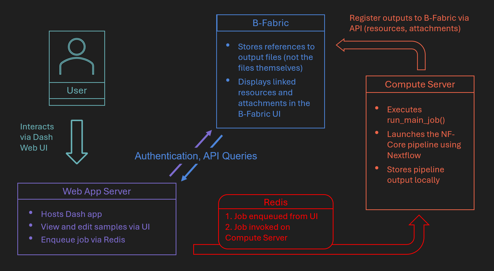

Nextflow Use Case#
This chapter provides a comprehensive example of how Nextflow-based workflows, specifically NF-Core RNA-seq, can be seamlessly integrated into web applications using the bfabric_web_apps library.
Overview#
This chapter demonstrates how the bfabric_web_apps library can be utilized to build Dash-based applications for running Nextflow pipelines. The general structure of these applications leverages Redis queues for asynchronous job management, integrates seamlessly with the B-Fabric system, and employs a modular, user-friendly web interface for workflow management.
The RNA-seq application described in detail here is a proof-of-concept showcasing how complex bioinformatics workflows can be efficiently executed through an interactive web interface integrated into the B-Fabric ecosystem. For the complete source code or a quickstart guide, visit the RNA-seq app GitHub repository.
Additionally, although not covered extensively in this chapter, we provide two other proof-of-concept applications:
Demultiplex App: Demonstrates integration between B-Fabric, the NF-Core Demultiplex pipeline, and Redis-based asynchronous job execution, validating the flexibility of the
bfabric_web_appslibrary. The source code is available in the bfabric_app_demultiplex GitHub repository.Hello World App: Offers a minimalistic example to quickly grasp the basic integration concepts between Nextflow, B-Fabric, and Redis job queues. The source code is available in the nfc-hello-world GitHub repository.
What is Nextflow & NF-Core?#
Nextflow is a powerful workflow management system designed for scalable, reproducible computational pipelines. It supports parallel and distributed computing across various environments, including local machines, HPC clusters, and cloud services.
NF-Core is a community-driven project that provides standardized Nextflow pipelines adhering to best practices for bioinformatics analysis. It includes workflows for a wide range of use cases, such as RNA-seq, ATAC-seq, and genome assembly.
RNA-seq Use Case#
The RNA-seq app illustrates the practical application of the bfabric_web_apps library by orchestrating the widely-used NF-Core RNA-seq pipeline for bulk transcriptomics analysis.
The RNA-seq app is a proof-of-concept application for transcriptomic analysis within the B-Fabric ecosystem. It demonstrates how to combine B-Fabric metadata, a user-friendly Dash interface, and NF-Core RNA-seq pipelines in a single web application.
The app is built using the bfabric_web_apps library and follows the redis_index.py template, enabling asynchronous job execution via a Redis queue system.
Although this chapter specifically discusses the RNA-seq use case, many elements and structures described here are common across other Nextflow-based applications. The RNA-seq app thus serves as a representative example to illustrate the general structure and implementation patterns of Nextflow applications developed using the bfabric_web_apps library.
For the complete source code or a quickstart guide, visit the RNA-seq app GitHub repository.
NF-Core RNA-seq Pipeline#
The NF-Core RNA-seq pipeline is a widely used, community-maintained workflow for processing bulk RNA sequencing data. It includes quality control, alignment, quantification, and differential expression analysis using tools such as FastQC, STAR, and DESeq2.
For more details, see the official documentation.

App Structure#
The RNA-seq app is organized into three main components:
B-Fabric Integration Internal logic handles all interactions with the B-Fabric API. It fetches project and dataset metadata, extracts relevant information, and generates sample sheet files used as pipeline input.
User Interface The Dash-based UI collects key input parameters such as CPU, RAM, FASTA, GTF files, and an email address. It also includes a Charge Switch to associate run costs with a B-Fabric container. Sample metadata is visualized in a table where users can review and edit records before submission.
Main Job Execution When the user confirms submission, the app:
Converts files to byte streams.
Builds the appropriate bash command to run the Nextflow-based NF-Core RNA-seq pipeline.
Enqueues the job to Redis for remote execution.
Registers output files and reports back into B-Fabric via the API.
This modular design supports rapid development and easy adaptation to other Nextflow pipelines.
Server Architecture#
The RNA-seq app follows a three-tier architecture that decouples the web interface, job scheduling, and job execution:
A Web App Server hosts the Dash UI, processes input from users, fetches B-Fabric metadata, and enqueues jobs via Redis.
A Compute Server listens to Redis, runs the actual Nextflow jobs using
run_main_job(), and stores output locally.The B-Fabric System provides metadata access and receives resource links and attachments once processing is complete.
RNA-seq Architecture Diagram#

This architecture allows for asynchronous, scalable, and user-friendly execution of complex workflows integrated with B-Fabric.
Step-by-Step Workflow#
Launch the App The user opens the RNA-seq web app via a B-Fabric launch link containing a valid session token.
Authentication and Token Validation The app extracts the token, validates it using B-Fabric’s REST API, and fetches:
Token metadata
Application metadata
Dataset/entity metadata
Configure Run Parameters The user enters details like:
Job name and comment
Email address
Number of CPUs and RAM allocation
FASTA and GTF reference files
Queue selection (
lightorheavy)Toggle charge switch (on/off)
Review Sample Metadata A DataTable renders the B-Fabric dataset. Users can inspect and review the detected sample names and file associations.
Submit the Pipeline Job After clicking the submit button, a modal asks for final confirmation.
Run the Job via Redis Queue On confirmation:
A sample sheet CSV is generated and saved
Associated files are converted to byte strings
Bash commands for pipeline execution are prepared
Output/attachment/resource paths are configured
The job is enqueued using Redis (
q(queue).enqueue(...))
Charge Project (Optional) If the Charge Switch is enabled, the selected container is charged using the
create_charge()function before pipeline execution.
Expected Output#
Once the job is completed, users can expect the following:
Output Directory on Compute Server: A directory structure containing all pipeline outputs, logs, and reports. Named based on timestamp, e.g.,
/STORAGE/OUTPUT_rnaseq_2025-05-06_10-32-00Registered B-Fabric Resources: The output directory and key attachments (e.g., MultiQC reports, Qualimap reports, DESeq2 plots) are linked back to the originating dataset entity in B-Fabric.
Accessible QC Reports: HTML reports and plots are attached to the dataset for downstream inspection or publication.
Workunit Creation: The application logs workunits for job tracking and reproducibility within B-Fabric. This functionality is handled automatically through the
bfabric_web_appslibrary configuration.Automatic Charging (if enabled): If the user activates the Charge Switch, the application automatically charges the appropriate container using the configured service ID before pipeline execution.
Integrated Metadata: All generated outputs—datasets, resources, and workunits—are fully connected within B-Fabric, ensuring traceability, reproducibility, and integration across the platform.
By following this structured approach, users can run RNA-seq pipelines reproducibly, monitor job progress, and trace results directly within B-Fabric—all from an interactive and simplified Dash web interface.